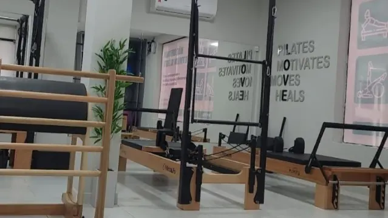

Pilates
Seu momento de movimento.
Conheça nosso estúdio de aparelhos e consulte os horários das aulas. Vamos conversar sobre como começar.
Consultar aulas de PilatesEstamos em Geisel, João Pessoa
Pilates e diferentes atendimentos em um só lugar. Venha conhecer nosso espaço e conversar sobre o cuidado que você procura.
Fale com a gente no WhatsAppConheça nossos atendimentos
Conheça as áreas de atendimento que oferecemos. Para informações sobre profissionais, disponibilidade e agendamento, converse com a gente.
Pilates
Conheça nosso estúdio de aparelhos e consulte os horários das aulas. Vamos conversar sobre como começar.
Consultar aulas de PilatesConte à nossa equipe o que você procura e consulte o atendimento disponível.
Fale com a gente para conhecer o acompanhamento nutricional e a agenda.
Consulte as possibilidades de atendimento e combine seu horário com a equipe.
Conheça as opções de cuidado disponíveis e tire suas dúvidas antes de agendar.

Nosso espaço fica no Monte Ville, em Geisel. Aqui, você pode conversar com a gente sobre Pilates e os diferentes atendimentos que procura.
Antes de vir, consulte a disponibilidade e combine sua visita pelo WhatsApp.
Acompanhe nosso InstagramFale com a gente pelo WhatsApp. Conte o que você procura e consulte os horários disponíveis antes de vir.
Converse com nossa equipe para conhecer as opções de atendimento e os valores atuais.
Sim. Entre em contato para organizar sua visita e receber as informações sobre o atendimento que procura.